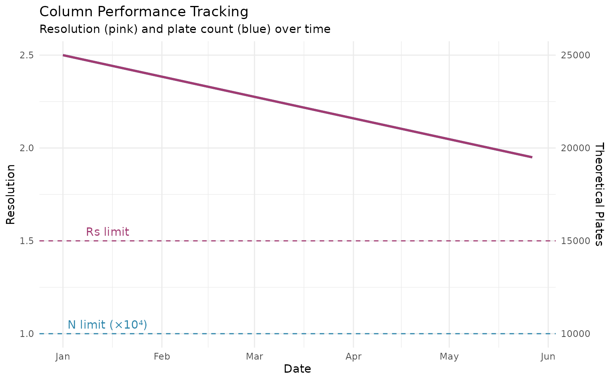

Overview
System Suitability Testing (SST) ensures that the chromatographic system is performing adequately before, during, and after sample analysis. This vignette covers:
- Key SST parameters for SEC
- Using the QC functions
- Comprehensive system suitability testing
- Regulatory requirements
Setup
library(measure)
#> Loading required package: recipes
#> Loading required package: dplyr
#>
#> Attaching package: 'dplyr'
#> The following objects are masked from 'package:stats':
#>
#> filter, lag
#> The following objects are masked from 'package:base':
#>
#> intersect, setdiff, setequal, union
#>
#> Attaching package: 'recipes'
#> The following object is masked from 'package:stats':
#>
#> step
library(measure.sec)
library(dplyr)
library(ggplot2)Key SST Parameters
Resolution (Rs)
Resolution measures the separation between adjacent peaks:
# Calculate resolution between two peaks
Rs <- measure_sec_resolution(
retention_1 = 8.2, # Dimer peak
retention_2 = 9.5, # Monomer peak
width_1 = 0.4,
width_2 = 0.5,
method = "usp"
)
cat("Resolution:", round(Rs, 2), "\n")
#> Resolution: 2.89Interpretation:
| Rs Value | Separation | Quality |
|---|---|---|
| < 1.0 | Poor overlap | Unacceptable |
| 1.0 | ~94% separated | Marginal |
| 1.5 | Baseline separation | Acceptable |
| > 2.0 | Complete separation | Excellent |
Plate Count (N)
Theoretical plate count measures column efficiency:
# Calculate plate count for a peak
N <- measure_sec_plate_count(
retention = 9.5,
width = 0.25,
width_type = "half_height"
)
cat("Theoretical plates:", round(N), "\n")
#> Theoretical plates: 8000
# With dead time for effective plates
N_eff <- measure_sec_plate_count(
retention = 9.5,
width = 0.25,
dead_time = 3.0
)
cat("Effective plates:", round(N_eff), "\n")
#> Effective plates: 3745Typical SEC Performance:
| Column Type | Plates/meter |
|---|---|
| Analytical SEC | 10,000-40,000 |
| Prep SEC | 5,000-15,000 |
| UHPLC SEC | 50,000+ |
Peak Asymmetry
Asymmetry indicates deviation from Gaussian peak shape:
# Calculate tailing factor (USP method)
Tf <- measure_sec_asymmetry(
leading = 0.12, # Leading half-width at 5% height
tailing = 0.15, # Tailing half-width at 5% height
method = "usp"
)
cat("Tailing factor:", round(Tf, 2), "\n")
#> Tailing factor: 1.13
# EP asymmetry factor (at 10% height)
As <- measure_sec_asymmetry(
leading = 0.10,
tailing = 0.12,
method = "ep"
)
cat("Asymmetry factor:", round(As, 2), "\n")
#> Asymmetry factor: 1.2Interpretation:
| Value | Shape | Interpretation |
|---|---|---|
| 0.8-1.0 | Slight fronting | Acceptable |
| 1.0 | Symmetric | Ideal |
| 1.0-1.2 | Slight tailing | Acceptable |
| > 1.5 | Significant tailing | Investigate |
| > 2.0 | Severe tailing | Problem |
Mass Recovery
Recovery verifies that all injected sample is detected:
# Calculate percent recovery
recovery <- measure_sec_recovery(
detected_mass = 0.195,
injected_mass = 0.200
)
cat("Recovery:", round(recovery, 1), "%\n")
#> Recovery: 97.5 %Acceptance Criteria:
| Recovery | Status | Action |
|---|---|---|
| 95-105% | Pass | None |
| 90-95% or 105-110% | Marginal | Investigate |
| < 90% | Fail | Identify cause |
Comprehensive SST
Using measure_sec_suitability()
Run a complete SST evaluation:
# Define peak data from integration
peaks <- data.frame(
name = c("aggregate", "dimer", "monomer", "fragment"),
retention = c(7.2, 8.5, 9.8, 11.5),
width = c(0.30, 0.28, 0.32, 0.38),
area = c(2.1, 5.3, 89.2, 3.4)
)
# Run system suitability test
sst <- measure_sec_suitability(
peaks = peaks,
reference_peaks = c("dimer", "monomer"), # Critical pair for resolution
column_length = 30 # cm
)
print(sst)
#> SEC System Suitability Test
#> ==================================================
#>
#> Overall Status: PASSED
#>
#> Results:
#> --------------------------------------------------
#> resolution : 4.333333 (>= 1.5) [PASS]
#> plate count : 5196.0 (>= 5000) [PASS]
#> plates per meter : 17320.0 (informational) [INFO]
#> --------------------------------------------------Custom Criteria
Specify custom acceptance criteria:
# Stricter criteria for validated method
strict_criteria <- list(
resolution_min = 2.0, # Higher resolution requirement
plate_count_min = 10000, # Higher efficiency
tailing_min = 0.9,
tailing_max = 1.3,
recovery_min = 97,
recovery_max = 103,
retention_rsd_max = 0.5,
area_rsd_max = 1.0
)
sst_strict <- measure_sec_suitability(
peaks = peaks,
reference_peaks = c("dimer", "monomer"),
criteria = strict_criteria
)
print(sst_strict)
#> SEC System Suitability Test
#> ==================================================
#>
#> Overall Status: FAILED
#>
#> Results:
#> --------------------------------------------------
#> resolution : 4.333333 (>= 2) [PASS]
#> plate count : 5196.0 (>= 10000) [FAIL]
#> --------------------------------------------------Adding Replicate Data
For precision assessment:
# Replicate injections
peaks_reps <- data.frame(
name = rep(c("dimer", "monomer"), each = 6),
replicate = rep(1:6, 2),
retention = c(
8.52, 8.51, 8.53, 8.50, 8.52, 8.51, # Dimer
9.80, 9.81, 9.79, 9.82, 9.80, 9.81 # Monomer
),
width = c(
0.28, 0.27, 0.28, 0.28, 0.29, 0.28,
0.32, 0.31, 0.32, 0.31, 0.32, 0.32
),
area = c(
5.2, 5.4, 5.3, 5.1, 5.3, 5.2,
89.5, 88.9, 89.2, 89.8, 89.1, 89.4
)
)
sst_reps <- measure_sec_suitability(
peaks = peaks_reps,
reference_peaks = c("dimer", "monomer")
)
summary(sst_reps)
#> SEC System Suitability Summary
#>
#> Metrics evaluated: 3
#> Passed: 3
#> Failed: 0
#>
#> Overall: PASSEDColumn Performance Tracking
Monitoring Over Time
# Simulated column tracking data (22 weeks)
dates <- seq(as.Date("2024-01-01"), as.Date("2024-06-01"), by = "week")
n_weeks <- length(dates)
# Create declining performance metrics
column_log <- tibble(
date = dates,
plates = seq(25000, 19500, length.out = n_weeks),
resolution = seq(2.5, 1.95, length.out = n_weeks)
)
ggplot(column_log, aes(date)) +
geom_line(aes(y = plates / 10000), color = "#2E86AB", linewidth = 1) +
geom_line(aes(y = resolution), color = "#A23B72", linewidth = 1) +
geom_hline(yintercept = 1.5, linetype = "dashed", color = "#A23B72") +
geom_hline(yintercept = 1.0, linetype = "dashed", color = "#2E86AB") +
annotate("text", x = as.Date("2024-01-15"), y = 1.55, label = "Rs limit", color = "#A23B72") +
annotate("text", x = as.Date("2024-01-15"), y = 1.05, label = "N limit (×10⁴)", color = "#2E86AB") +
scale_y_continuous(
name = "Resolution",
sec.axis = sec_axis(~. * 10000, name = "Theoretical Plates")
) +
labs(
x = "Date",
title = "Column Performance Tracking",
subtitle = "Resolution (pink) and plate count (blue) over time"
) +
theme_minimal()
Calculating Column Lifetime
# When performance drops below limit
min_plates <- 10000
min_resolution <- 1.5
# Find when limits are crossed
plates_ok <- column_log$plates > min_plates
resolution_ok <- column_log$resolution > min_resolution
# Column lifetime estimate
column_lifetime_weeks <- min(which(!plates_ok | !resolution_ok))
#> Warning in min(which(!plates_ok | !resolution_ok)): no non-missing arguments to
#> min; returning Inf
cat("Estimated column lifetime:", column_lifetime_weeks, "weeks\n")
#> Estimated column lifetime: Inf weeks
cat("Last acceptable date:", format(column_log$date[column_lifetime_weeks - 1]), "\n")
#> Last acceptable date: NARegulatory Framework
USP <621> Requirements
| Parameter | Requirement |
|---|---|
| Resolution | Rs ≥ 2.0 (unless otherwise specified) |
| Tailing | T ≤ 2.0 |
| Plate count | As specified in monograph |
| RSD (replicate injections) | ≤ 2.0% for areas |
Best Practices
SST Frequency
| Situation | SST Level |
|---|---|
| Beginning of sequence | Full SST |
| Every 10-20 injections | Bracketing standard |
| End of sequence | System check |
| After mobile phase change | Full SST |
| After column change | Full SST + qualification |
Session Info
sessionInfo()
#> R version 4.5.2 (2025-10-31)
#> Platform: x86_64-pc-linux-gnu
#> Running under: Ubuntu 24.04.3 LTS
#>
#> Matrix products: default
#> BLAS: /usr/lib/x86_64-linux-gnu/openblas-pthread/libblas.so.3
#> LAPACK: /usr/lib/x86_64-linux-gnu/openblas-pthread/libopenblasp-r0.3.26.so; LAPACK version 3.12.0
#>
#> locale:
#> [1] LC_CTYPE=C.UTF-8 LC_NUMERIC=C LC_TIME=C.UTF-8
#> [4] LC_COLLATE=C.UTF-8 LC_MONETARY=C.UTF-8 LC_MESSAGES=C.UTF-8
#> [7] LC_PAPER=C.UTF-8 LC_NAME=C LC_ADDRESS=C
#> [10] LC_TELEPHONE=C LC_MEASUREMENT=C.UTF-8 LC_IDENTIFICATION=C
#>
#> time zone: UTC
#> tzcode source: system (glibc)
#>
#> attached base packages:
#> [1] stats graphics grDevices utils datasets methods base
#>
#> other attached packages:
#> [1] ggplot2_4.0.1 measure.sec_0.0.0.9000 measure_0.0.1.9001
#> [4] recipes_1.3.1 dplyr_1.1.4
#>
#> loaded via a namespace (and not attached):
#> [1] gtable_0.3.6 xfun_0.55 bslib_0.9.0
#> [4] lattice_0.22-7 vctrs_0.6.5 tools_4.5.2
#> [7] generics_0.1.4 parallel_4.5.2 tibble_3.3.0
#> [10] pkgconfig_2.0.3 Matrix_1.7-4 data.table_1.18.0
#> [13] RColorBrewer_1.1-3 S7_0.2.1 desc_1.4.3
#> [16] lifecycle_1.0.4 compiler_4.5.2 farver_2.1.2
#> [19] textshaping_1.0.4 codetools_0.2-20 htmltools_0.5.9
#> [22] class_7.3-23 sass_0.4.10 yaml_2.3.12
#> [25] prodlim_2025.04.28 tidyr_1.3.2 pillar_1.11.1
#> [28] pkgdown_2.2.0 jquerylib_0.1.4 MASS_7.3-65
#> [31] cachem_1.1.0 gower_1.0.2 rpart_4.1.24
#> [34] parallelly_1.46.0 lava_1.8.2 tidyselect_1.2.1
#> [37] digest_0.6.39 future_1.68.0 purrr_1.2.0
#> [40] listenv_0.10.0 labeling_0.4.3 splines_4.5.2
#> [43] fastmap_1.2.0 grid_4.5.2 cli_3.6.5
#> [46] magrittr_2.0.4 survival_3.8-3 future.apply_1.20.1
#> [49] withr_3.0.2 scales_1.4.0 lubridate_1.9.4
#> [52] timechange_0.3.0 rmarkdown_2.30 globals_0.18.0
#> [55] nnet_7.3-20 timeDate_4051.111 ragg_1.5.0
#> [58] evaluate_1.0.5 knitr_1.51 hardhat_1.4.2
#> [61] rlang_1.1.6 Rcpp_1.1.0 glue_1.8.0
#> [64] ipred_0.9-15 jsonlite_2.0.0 R6_2.6.1
#> [67] systemfonts_1.3.1 fs_1.6.6